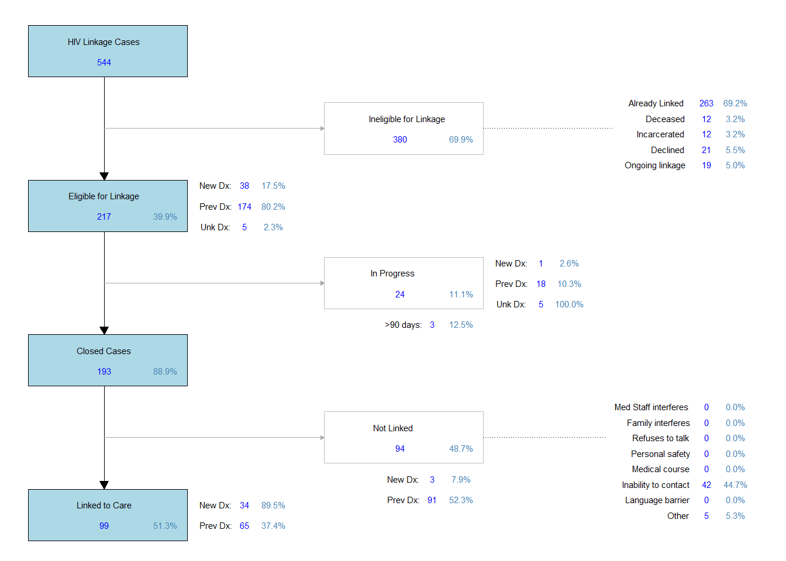
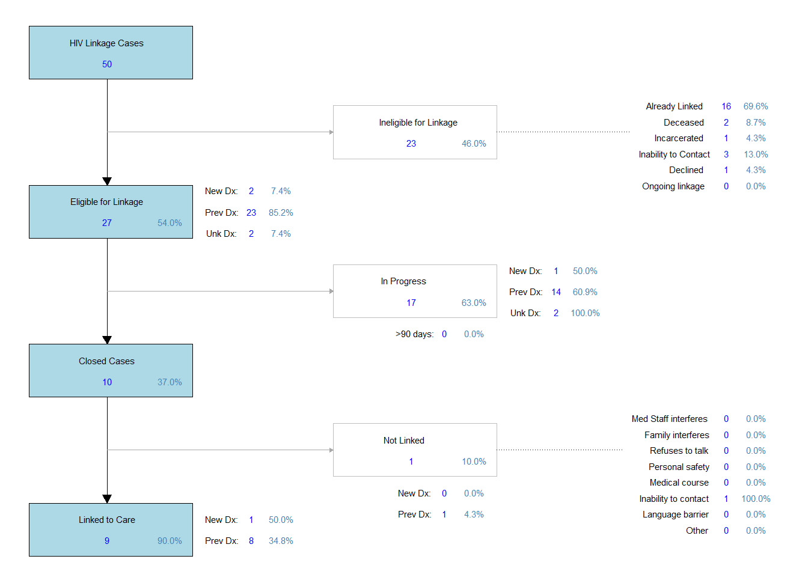
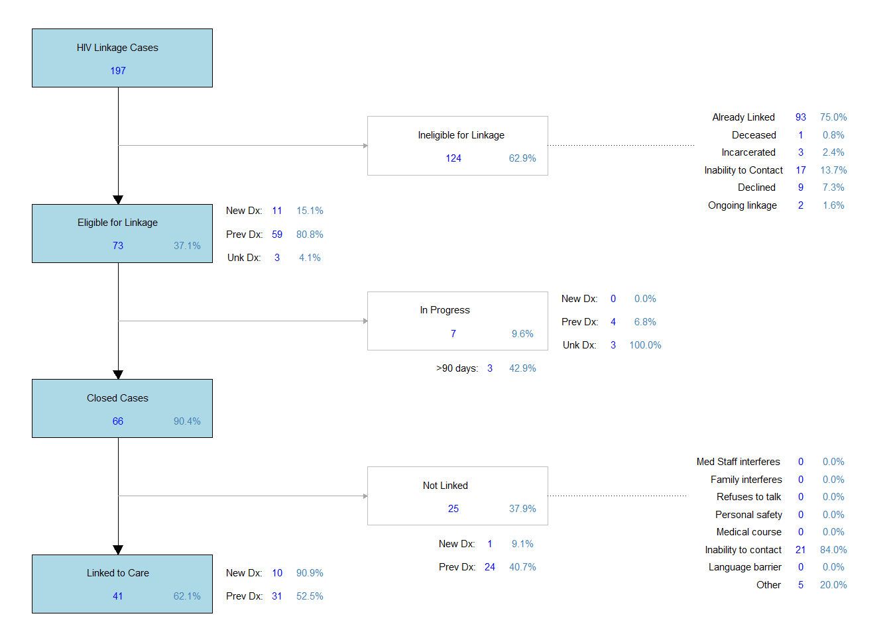
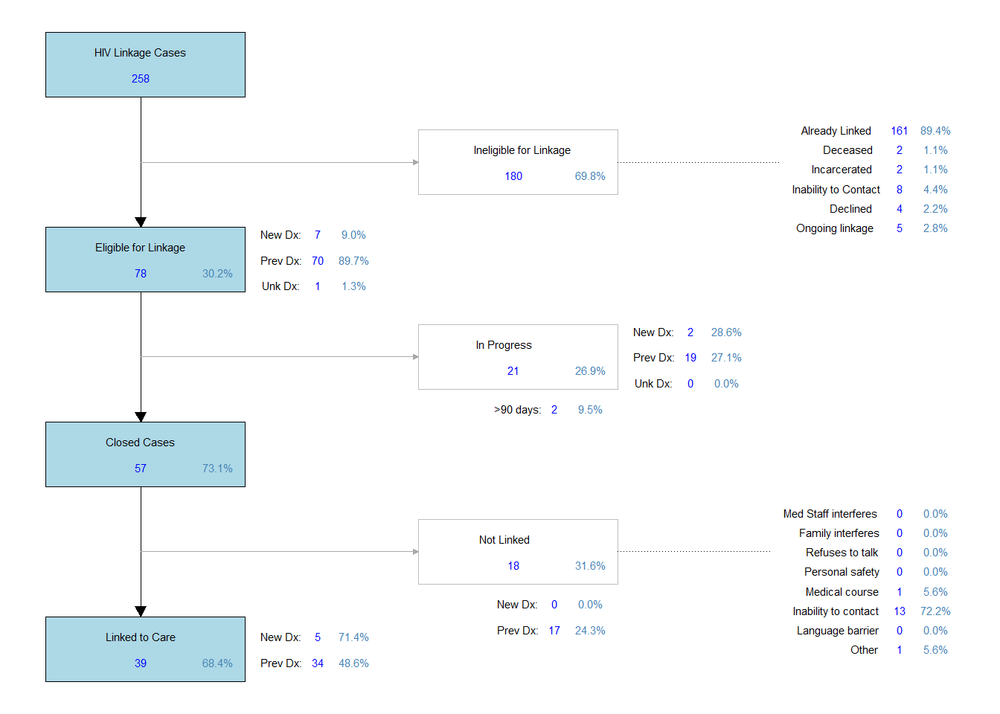

| CTR | EHE | Total | |
|---|---|---|---|
| Number of Tests | 2626 | 694 | 3320 |
| Positives | 22 | 1 | 23 |
| New Positives | 17 | 0 | 17 |
| Positivity Rate | 0.65% | 0.00% | 0.51% |
HIV Testing & Linkage to Care
This will pull together all of the different HIV testing methods (CTR, EHE, Lab) showing independent testing programs as well as total testing through EIP.
HIV Testing - Overview
Testing for Human Immunodeficiency Virus (HIV) is a major focus for EIP, with several methods for testing and various funding streams that are built within the program. The various programs that involve HIV testing are covered on this page, with specific deliverables promised within each program provided under the Deliverables tab. In parallel with lab-based testing conducted within the hospital and/or clinical settings, rapid-based testing conducted by EIP is covered under several different grants, and is the focus of this dashboard.
The following table shows an overview of the total number of tests within each testing program, the total number of positives as well as the number of newly identified positive cases, and the positivity rate for each program. The overall positivity rate for individuals newly diagnosed for the combined rapid-based testing methods within EIP is 0.51% (17 total new positives out of 3320 total rapid-HIV tests).
Annual HIV testing for each of the rapid-based testing streams is shown in the graph below.
The reporting for each of these programs is done on a monthly basis, so it is easier to look at the total number of tests that are conducted for each program within a monthly breakdown. The figure below shows the monthly testing numbers for each of the programs.
HIV Linkage to Care
Any individual that is identified as a person living with HIV/AIDS (PLWHA), whether newly diagnosed or an individual known to be previously positive, is meant to have a linkage case started to determine the need and level of follow-up by the EIP Linkage team. All encounters where an individual is identified as a PLWHA is counted, and then their need for linkage is assessed by the linkage team so that the true number of those in need of our services can be determined. The total number of encounters where an individual is identified as a PLWHA is 567, and the total number of linkage cases initiated (should be equal) is 544 (95.9% of those encounters with PLWHA, 544/567). A consort diagram of these HIV Linkage cases is shown later.
Ineligible LTC Cases
Once a linkage case is started, the linkage team determines whether it can realistically be worked based on the outreach abilities of our linkage team. There are several factors that have been determined that make a linkage case “ineligible” to be worked, and are thus excluded from the total number reported to funding entities when reporting linkage data. This “ineligible” definition does not always mean that the individual cannot be linked, but there are significant barriers that our linkage team cannot always overcome based on their position, and we thus do not fault them in an inability to connect the individual to care. These situations are not necessarily mutually exclusive.
If an individual states that they are already in care, or if there is clear evidence within the medical record that the individual is successfully engaging in care, then they are termed “ineligible” due to already being linked to care. There may be additional things that our linkage team can assist with, but as far as linkage for HIV care, there is no additional effort our team needs to provide, so they are termed “ineligible” are are not considered out of care. The total number of HIV linkage cases where the individual was known to already be in care are 263 (69.2% of all HIV linkage cases initiated, 263/544).
If the individual passes away during their encounter in the emergency department, or while our linkage team is attempting to get them linked to care, then they are termed “ineligible” as they are not able to be followed for care, and thus are excluded from final linkage numbers. The total number of HIV linkage cases where the individual was deceased before linkage could be completed was 12 (3.2% of all HIV linkage cases initiated, 12/544).
If the individual is in police custody, or incarcerated while the linkage team is attempting to get them linked to care, then there are often difficulties in establishing communication with the individual and getting them to an appointment with a specialist. While not impossible to link them to care in these situations, it does make it more difficult and could provide significant barriers for our team, and thus are termed “ineligible” if this is the case in that situation. The total number of HIV linkage cases where the individual was incarcerated or in police custody, therefore complicating linkage access, was 12 (3.2% of all HIV linkage cases initiated, 12/544).
Sometimes, the individual may not have contact information in which our linkage team can reach out to initiate contact. This often happens when we are unable to meet the individual while they are in the hospital, and must try to initiate contact through phone calls or other means. This is different than our team having contact information for the individual and they are just unable to contact them through these methods. This “ineligible” criteria is when there is no reliable effort in which to reach the individual, meaning we are unable to actually initiate contact and follow-up. The total number of HIV linkage cases where our linkage team had no ability to contact the individual was 54 (14.2% of all HIV linkage cases initiated, 54/544).
If the individual declines our team’s linkage services for any reason, even after multiple offers for support, then they are termed “ineligible” since they do not feel our intervention is necessary at that time. The total number of HIV linkage cases where the individual declined linkage services was 21 (5.5% of all HIV linkage cases initiated, 21/544).
Due to the length of time that some linkage cases may take, there are several instances where the individual may return and be identified by EIP while they already have an ongoing linkage case. Rather than duplicating the need for linkage, and only maintaining one linkage case at a time, the individual is still marked as identified for linkage, but termed “ineligible” due to ongoing linkage already in progress. The total number of HIV linkage cases where the individual already had an ongoing linkage case in progress was 19 (5.0% of all HIV linkage cases initiated, 19/544).
Eligible LTC Cases
There are a total number of 380 HIV linkage cases where the individual meets at least one of these “ineligible” criteria (69.9% of all HIV linkage cases initiated, 380/544), leaving 217 HIV linkage cases that are eligible to be worked by our linkage team (39.9% of all HIV linkage cases initiated, 217/544). This is the total number of HIV Linkage cases that is used when reporting our linkage efforts for HIV. Additionally, HIV linkage is broken out by linkage efforts for those who are newly diagnosed and those individuals that are previously known to be positive requiring re-engagement in care. There are 38 linkage cases eligible for individuals who are New Diagnoses (17.5% of all eligible HIV linkage cases, 38/217) and there are 174 linkage cases for individuals who are Previous Diagnoses (80.2% of all eligible HIV linkage cases, 174/217). It may take some time before it is known whether an individual has a previous diagnosis, or if that instance of when staff identify them as positive is a new diagnosis, depending on the situation. Therefore, we also track the number of eligible HIV linkage cases where the individual has an “unknown diagnosis” status. This does not mean their status is unknown (since HIV linkage is only done for those who are positive), it is unknown whether they are new or previous at the time of the data pull. There are 5 HIV linkage cases where they are in this unknown state (2.3% of all eligible HIV linkage cases, 5/217).
From this point, it is tracked whether a case in open and currently being worked, or whether it is closed and what the final linkage status is for the case. There are a total of 24 HIV linkage cases that are currently open and in progress (11.1% of all eligible HIV linkage cases, 24/217). There are 1 cases open that are for New Diagnoses (2.6% of all eligible HIV cases for New Diagnoses, 1/38) and there are 18 cases open that are for Previous Diagnoses (10.3% of all eligible HIV cases for Previous Diagnoses, 18/174).
There are a total of 193 closed HIV linkage cases (88.9% of all eligible HIV linkage cases, 193/217). There was a total of 99 eligible HIV linkage cases where the individual was successfully connected to care (51.3% of all eligible HIV linkage cases, 99/217). The definition used for successful linkage for PLWHA is that they are known to attend an appointment or individualized meeting with a specialist for HIV care, such as at UCMC Infectious Disease Center (IDC). There were a total of 34 cases where the individual was newly diagnosed for HIV that were linked to care (89.5% of all eligible HIV linkage cases for New Diagnoses, 34/38), and a total of 65 cases where the individual was a previously known positive for HIV that were linked to care (37.4% of all eligible HIV linkage cases for Previous Diagnoses, 65/174).
For those situations where the individual was eligible to be linked to care, there were a total of 94 cases where they were not successfully established with treatment (48.7% of all eligible HIV linkage cases, 94/217). Out of these, 3 were cases where the individual was newly diagnosed (7.9% of all eligible HIV linkage cases for New Diagnoses, 3/38) and 91 were cases where the individual was previously diagnosed (52.3% of all eligible HIV linkage cases for Previous Diagnoses, 91/174). For situations where the individual was not successfully established with care, the specific reasons as to why they were unable to be linked are documented within the linkage record. There are numerous reasons why an individual may be prevented from being linked, and these reasons are not mutually exclusive. The medical staff or the family may interfere with attempts to get them into care, the patient may refuse to communicate with our linkage team, or there may be no reliable way to contact the individual during follow-up, or any other number of reasons. These reasons are shown in the consort diagram below.
The consort or flow diagram below represents all of the linkage data described above visually. All numbers are represented as total (n, blue) and percent (%, steel blue). To know the denominator of each percent represented in the consort diagram below, please refer to the description of the data points in the text above.

Our HIV linkage program also has deliverables for HIV linkage to care, requiring that about 80% of our HIV Linkage cases are connected with treatment, encompassing both new and previous diagnoses. For this metric, the total number of cases reported are the total number of HIV cases that are “eligible” for linkage (217 total cases). The total number successfully linked to care (99 linked to care) is reported, with the overall percentage of the total eligible for linkage (51.3% linked to care), while also providing the total number of cases that are still in progress (24 cases in progress) for their understanding of the overall picture at the time of reporting. Linkage to care data is reported for CTR on a mid-year and end of year period, but this data covers all cases covered in this dashboard. The gauge to show how close we are to meeting our deliverable for HIV Linkage to Care goal for the program is shown below.
Since HIV LTC data is typically reported on an annual basis, the specific HIV linkage numbers for each year are presented below along with the linkage to care success rate.
This shows the HIV LTC flow diagram for all linkage cases in 2025, along with the linkage to care success rate.

This shows the HIV LTC flow diagram for all linkage cases in 2024, along with the linkage to care success rate.

This shows the HIV LTC flow diagram for all linkage cases in 2023, along with the linkage to care success rate.

Additonal things still to include
- Indeterminate tests
- False positive tests
- ED Lab testing data